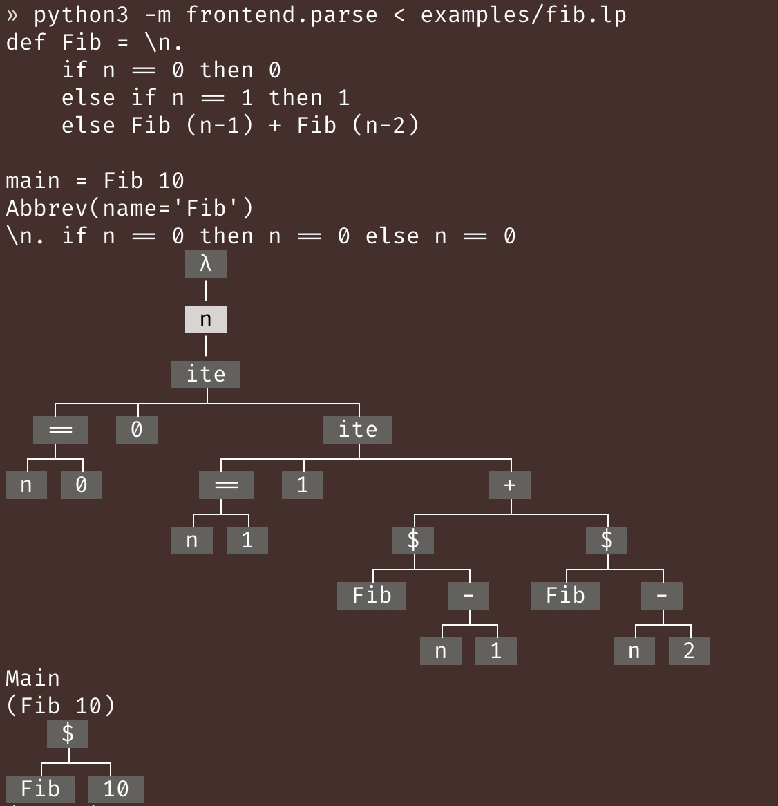
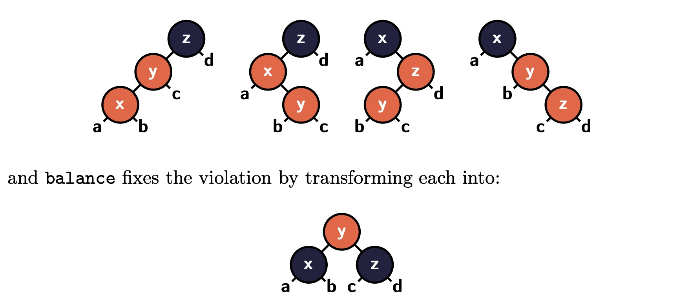

Course Description
Languages shape how we think.
This course will expand how you think about programming by showing how languages are built. We'll demystify so-called "paradigms" -- imperative, object-oriented, and functional -- by distilling them into their core building blocks. You'll come to see familiar languages in a new light, see through surface-level syntax, and choose the right abstractions for the right problems.
More deeply, you'll learn powerful tools used by language designers and theorists to ensure the correctness of languages and programs written in them. In a world increasingly flooded with AI-generated slop, this course will sharpen your ability to separate signal from noise and build provably unhackable software, making you irreplaceable in the "AI future".
All this is grounded in hands-on projects. Throughout the session, you'll design and implement a simple but powerful language that unifies seemingly disjoint paradigms and previews next-generation language features.
Learning Outcomes
By the end of this course, you will be able to:
- Formalize the syntax and semantics of programming languages from informal description.
- Visualize and reason about languages and programs written in them using formal models.
- Implement interpreters and type checkers from formal specifications.
- Analyze widely held misconceptions about language features and "paradigms", and desugar surface-level features into their essential components.
- Apply typed functional programming and computational effects to solve problems.
Teaching Team

Instructor: Junrui Liu (pronounced "June-ray", he/him)
I'm a PhD student in Computer Science (just finished my 4th year). I research Programming Languages, so the stuff we cover in CS 162 is very close to my heart. I've been TA'ing this course for 4 years in a row, and am super excited to teach it for the first time as an instructor!
In my free time, I enjoy watching owarai, anime and competitive Valorant. I also like playing carillon (you might catch me practicing on the Storke Tower on weekends this summer).
Email: junrui@ucsb.edu
Office hours:
- Tue, Wed, Thur, 2-3pm, Phelps 2510
- Fri, 1-2pm, Building 936 aka "TA trailer"
TA: Jiaming Shan (he/him)
I'm a first-year CS PhD student in UCSB, advised by Prof. Yu Feng. My current research topic is Programming Language and Formal Verification. I'm currently working on projects on AI for math and smart contracts. I'm also interested in AI. In my leisure time, I play some digital card games and rhythm games.
Email: jiamingshan@ucsb.edu
Office hours: Mon 2-4pm @ CSIL (1st floor of Harold Frank Hall, south side)
The faculty mentor for this course is Prof. Yu Feng (yufeng@cs.ucsb.edu).
In the remainder of this syllabus, "I" refers to Junrui, the instructor, unless otherwise specified.
Course Communication
We will use Discord for most communication, including announcements and Q&A. The invitation link will be posted on Canvas. Sensitive information will be communicated via email (e.g., if you want to privately inquire about your grade).
Weekly Pattern
| Mon | Tue | Wed | Thu | Fri | |
|---|---|---|---|---|---|
| Class | No class 🏖️😎 | Lecture 🧑🏫 (12:30-1:50pm, Phleps 2514) | Lecture 🧑🏫 (12:30-1:50pm, Phleps 2514) | Lecture 🧑🏫 (12:30-1:50pm, Phleps 2514) | Section 🗣️ (11am-12:20pm, Phelps 1440) |
| OH | Jiaming (2-4pm, CSIL) | Junrui (2-3pm, Phelps 2510) | Junrui (2-3pm, Phelps 2510) | Junrui (2-3pm, Phelps 2510) | My turn 🏖️😎 |
Grading Scale
| Percentage | Letter Grade |
|---|---|
| 93% - 100% | A |
| 90% - 92% | A- |
| 87% - 89% | B+ |
| 83% - 86% | B |
| 80% - 82% | B- |
| 77% - 79% | C+ |
| 73% - 76% | C |
| 70% - 72% | C- |
| 67% - 69% | D+ |
| 63% - 66% | D |
| 60% - 62% | D- |
| 0% - 59% | F |
Note that:
- I reserve the right to curve the grades to the student's advantage. In other words, the percentage for each letter may be lowered at the end of the session, but will not be raised, so you can always expect to get at least the letter grade corresponding to the percentage listed above.
- I have no incentive to enforce a normal, bell-shaped distribution of grades, so you can be assured that you will get the letter grade you deserve based on your own performance, not on how well your classmates do.
Grading Criteria
- 5 homework assignments: 50%
- A mix of written exercises and programming tasks
- 2 quizzes: 40%
- Held in class, closed-book, no makeups
- No quiz will be held during the last week of the session
- 2 reflections: 10%
- More details in the Reflection Assignments section below
Readings
The primary reference for this course is the lecture notes, which will be made available in the Lecture Notes section of this website. I will try to release the notes within 2-3 days after each lecture.
For additional reference, here're some of my personal favorite textbooks on programming languages, all of which are freely available online:
- Types and Programming Languages by Benjamin C. Pierce
- Practical Foundations for Programming Languages (2nd Ed) by Robert Harper
- Programming Languages: Application and Interpretation (2nd Ed) by Shriram Krishnamurthi
Course Policies
Attendance
You are highly encouraged to attend both class and section. Although optional, attendance and participation will definitely influence your success level in this class -- not least because you can earn tokens for active participating!
Token System
You will receive tokens of my appreciation 💖 for giving me feedback on my teaching -- directly so by filling out surveys, or indirectly so by actively participating in class and coming to my office hours. You can redeem these tokens for corrections on quizzes. Each token allows you correct 1 point you lost on a quiz. There is no upper limit on the number of tokens you can earn.
Below is a tentative and non-exhaustive list of ways to earn tokens:
| Activity | Tokens | Reset |
|---|---|---|
| Filling out a survey | 2 💖 | every survey |
| Attending a lecture | 1 💖 | every lecture |
| Asking/answering a question in class | 2 💖 | every lecture |
| Coming to Junrui's office hours | 2 💖 | every week |
| Hidden events (explained when an event is triggered) | ??? 💖 | every event |
The Reset column indicates how often the tokens can be earned. For example, you can earn 2 tokens for asking a question in class, but you can only earn that token once per lecture. In other words, the first time you ask a question in each lecture grants you 2 tokens. (The resets are intended to prevent hardcore min-maxers from DDoSing me with questions.)
To redeem your tokens for quiz corrections, you will schedule an in-person meeting with Junrui toward the end of the course, during which you will go over your original and corrected answers. More details will be provided later in the course.
"What if I'm shy?"
Junrui: Same here. As an undergrad, I was terrified of speaking up in class, worried my question might sound “stupid” or my answer might be wrong. So if you're nervous, know it’s totally normal. And if you’re not comfortable talking in class, you can still earn tokens through office hours or surveys.
That said, this system is meant to nudge you toward participating more than you normally would. Ultimately, the system is designed to collect your feedback on my teaching. I'd much rather know you're confused right away than have you think you're fine, only to realize you're lost during the homework. Honestly, I value questions that reveal misunderstandings as much as correct answers. Think of it like learning an instrument or a sport — it’s better if a coach spots your mistake early, before you practice it the wrong way for too long. I’m your coach for learning programming languages, and you're mine for teaching them — so the feedback goes both ways.
One way to ease the nerves is to treat asking questions as a "min/max" strategy. You paid about $1200 for this class — you deserve the best grade you can earn (with academic integrity, of course). Questions help you earn correction tokens and boost your quiz scores. Even asking me to clarify something I just said counts. Staying quiet earns you 1 token; raising your hand earns you 3!
So I hope this takes some of the pressure off. There really are no stupid questions — only imagined ones.

Classroom Responsibility and Courtesy
This is a course where lectures will often involve discussions, since language design is inherently a human endeavor, and good designs only come from tons of trial and error and cross-pollination from diverse ideas. You are welcome and encouraged to express your own opinions in or after class, but you should expresse them respectfully. Respect fellow students and the hard work of others: in other words, your work must be your work, plagiarism will not be tolerated.
Collaboration and Academic Integrity
You are encouraged to work together on homework assignments, but you must write your own code and solutions, unless it's explicitly designed to be a group assignment.
Academic integrity is taken seriously. If you copy someone else's work (or LLM's work, as detailed in the GenAI Usage section), you will be violating UCSB's academic integrity policy, which will result in a failing grade for the course.
GenAI Usage
Unless otherwise specified, use of generative AI tools, including but not limited to chatbots (e.g., ChatGPT), coding assistants (e.g., Copilot), and coding agents (e.g., Cursor), is not allowed in this course.
"Why not?"
On the surface, using those tools would be a violation of UCSB's academic integrity policy. I do not want to report anyone -- it will make everyone sad, not just me, but if that happens, I will have no choice but to follow the policy.
Fundamentally, I want you to learn and think deeply about the materials, so that you become irreplaceable by AIs -- not training yet anthoer model for tech billionaires to replace the workers. The only way to gain muscle is to use that muscle. The only way to get good at an instrument is to practice. The only way to learn to speak a new language is to actually speak it. No learning occurs if the work doesn't happen within you.
Also, I respect your work, and I'd appreciate if you respect mine as well. I do not use AI to grade your work at all. If your work is AI generated, it's often easy to tell -- because a lot of the materials in this class are novel -- and I will be very sad to read something not from you. Also, I spent a lot of time designing and crafting this course. Although the materials may not be perfect, I'd greatly appreciate it if you respect my work by not feeding it as training data to some LLM. If something is not clear, please let me know, and I will do my best to make it better.
On a more cheerful note, you won't ever need them, hopefully.
- You do not need to write any boilerplate code for this class. Every line of code you write matters, and is designed to check your understanding -- think of Gradescope autograder as a personalized TA vetted by me. The entirety of the interpreter + type checker you'll write for the entire class is fewer than 500 lines of code (at least in my own implementation). Spread over 5 assignments, that's about 100-200 LOC per week, which I hope is manageable.
- LLMs are ok with program syntax, and bad with program semantics, because they can't escape the Halting Problem! This course, however, is all about semantics and wreslting with the "undecidable". Even if you only use chatbots as "personalized tutors", they will likely give you non-sensical answers for questions related to language semantics (don't ask how I know this). So if you have questions, I'd highly encourage you to ask me, the TA, or your classmates instead. I and the TA will do our absolute best to help you understand everything taught in this class + get 100% on all assignments, if you're willing to put in the work. Come to office hours, ask questions in class and in Discord, and form study groups.
TL;DR. I want you to learn and succeed. Don't be like this guy:

{kind=link}
Late Days
You have a total of 5 late days to use throughout the course for programming assignments. You can spend no more than 2 late days on each programming assignment, and you can use them in any combination you like (e.g., 1 day for HW1, 2 days for HW2, 2 days for HW5, etc.). Once you run out of late days, no more late submissions will be accepted, and you will receive a score of 0 for late assignments.
You cannot use late days on the written part of the assignments, since we may discuss the answers in class the next day.
Quiz Makeup
No makeups will be given for quizzes except for formally documented emergencies. If you miss a quiz, you will receive a score of 0 for that quiz.
University Policies
Copyright and Course Recording
All course materials (class lectures and discussions, handouts, quizzes, web materials) and the intellectual content of the course itself are protected by United States Federal Copyright Law and the California Civil Code. UC Policy 102.23 expressly prohibits students (and all other persons) from recording lectures or discussions and from distributing or selling course materials without my prior written permission. Students are permitted to make notes solely for their own private educational use. Exceptions to accommodate students with disabilities may be granted with appropriate documentation.
TL;DR. Don't share or sell material from this class with people outside of the course!
Title IX
Under Title IX, university students are protected from harassment and discrimination based on gender and sex. If a student feels uncomfortable or in need of support at any time related to their gender, sex, and/or sexual orientation, please contact me or your TA immediately. If a student would like to disclose information related to pronouns, name changes, or identities, we encourage you to do so. UCSB's Resource Center for Sexual and Gender Diversity on the 3rd floor of the Student Resource Building is also available to advocate and support to students
Disability Accommodations
Students with disabilities may request academic accommodations by contacting the Disabled Students Program (DSP). DSP is located at 2120 Student Resource Building and serves as the campus liaison regarding issues and regulations related to students with disabilities.
For exam accommodations, please submit requests at least 1 week before the quiz date, so that I can make the necessary arrangements.
Other Resources
Wellbeing and Mental Health
Personal concerns such as stress, anxiety, relationships, depression, cultural differences, can interfere with your ability to succeed and thrive. If you are experiencing any difficulties meeting class requirements, or any difficulties in your personal life, please contact UCSB Counseling and Psychological Services. For information, please call (805) 893-4411 or visit their web site. In addition, UCSB has tons of resources to help you gain the information, skills, and support systems you need to thrive and succeed academically.
Basic Needs
If you are facing any challenges securing food or finding housing, you are urged to meet with a Calfresh Advocate and Basic Needs Peer Advisor, who is aware of the broad variety of resources that UCSB has to offer. You are also urged to contact me or the TA if you are comfortable doing so. Please visit basicneeds.ucsb.edu for additional resources including Calfresh, the AS Food Bank, and more.
Reflection Assignments
I will share a couple of Youtube videos each week on some aspect of programming languages -- either directly related to what we talked about that week, or some broader topic that might be interesting/important but unfortunately doesn't fit into the short time we have in class.
Out of 6 weeks, you pick 2 weeks to watch the videos and write a short (2-3 paragraphs) reflection on what you learned from the video, what surprised you, what you agreed/disagreed with, how does it change the way you think about programming languages, how does it relate to your own experience, etc.
Completion = full credit. No need to be a great writer. Just share your thoughts in a way that others can understand, be honest and be thoughtful. You're encouraged to share your reflections with the class and comment on other students' reflections, if you feel comfortable doing so.
Again, don't use LLMs. If you do, it'll defeat the purpose of reflections; I and other students will also waste time reading and commenting on some random string of emotionless symbols that doesn't come from you. If you're tempted to use LLMs, that likely means the week's topic doesn't interest you. In that case, you can skip it and do it in another week when the topic does genuinely interest you, since you only need to choose 2 weeks out of 6 anyway.
Calendar (Tentative)
| Date | Topic | Out | Due |
|---|---|---|---|
| Week 1 | How to design a programming language? | ||
| 06/24 | Why study programming languages? + Python review | HW 1 | |
| 06/25 | Syntax | ||
| 06/26 | Inference rules | ||
| Week 2 | What makes a programming language? | ||
| 07/01 | Semantics | HW 2 | |
| 07/02 | Names | HW 1 | |
| 07/03 | Types | ||
| Week 3 | How to abstract data? | ||
| 07/08 | Finite and recursive types | HW 3 | |
| 07/09 | Pattern-matching | HW 2 | |
| 07/10 | Quiz 1 (tentative) | ||
| Week 4 | How to abstract computation? | ||
| 07/15 | Lambda calculus | HW 4 | |
| 07/16 | Polymorphism, type inference | HW 3 | |
| 07/17 | Defunctionalization, continuation-passing | ||
| Week 5 | How to change the world? | ||
| 07/22 | Mutable states | HW 5 | |
| 07/23 | Effect handlers | HW 4 | |
| 07/24 | Quiz 2 (tentative) | ||
| Week 6 | What is the future of programming like? | ||
| 07/29 | Advanced topic, TBD | ||
| 07/30 | Advanced topic, TBD | ||
| 07/31 | Advanced topic, TBD | ||
| 08/02 | (End of summer session A) | HW 5 |
Calendar 📅
Weekly Pattern
| Mon | Tue | Wed | Thu | Fri | |
|---|---|---|---|---|---|
| Class | No class 🏖️😎 | Lecture 🧑🏫 (12:30-1:50pm, Phleps 2514) | Lecture 🧑🏫 (12:30-1:50pm, Phleps 2514) | Lecture 🧑🏫 (12:30-1:50pm, Phleps 2514) | Section 🗣️ (11am-12:20pm, Phelps 1440) |
| OH | Jiaming (2-4pm, CSIL) | Junrui (2-3pm, Phelps 2510) | Junrui (2-3pm, Phelps 2510) | Junrui (2-3pm, Phelps 2510) | Junrui (1-2pm, Building 936 aka "TA trailer") |
Schedule
| Date | Topic | Out | Due |
|---|---|---|---|
| Week 1 | How to design a programming language? | ||
| 06/24 | Intro, Syntax I | ||
| 06/25 | Syntax II, Inference Rules | HW 1 | |
| 06/26 | Operational Semantics | ||
| 06/27 | Section: Python Tutorial | ||
| Week 2 | What makes a programming language? | ||
| 07/01 | Inference Rules Workshop | ||
| 07/02 | Variables | ||
| 07/03 | Lambda Calculus | HW 2 | HW 1 |
| 07/04 | No class (Independence Day) | ||
| Week 3 | How to abstract data? | ||
| 07/08 | Call-by | ||
| 07/09 | Rice's Theorem, Soundness & Completeness | ||
| 07/10 | Types | ||
| Week 4 | How to abstract computation? | ||
| 07/14 | - | HW 2 | |
| 07/15 | Quiz 1 | ||
| 07/16 | Type Soundness | HW 3 | |
| 07/17 | Bidirectional Typing | ||
| Week 5 | How to change the world? | ||
| 07/22 | Sum Types | ||
| 07/23 | Pattern Matching | HW 3 (written) | |
| 07/24 | Quiz 2 | ||
| 07/25 | Section | HW 4 | HW 3 (coding) |
| Week 6 | What is the future of programming like? | ||
| 07/29 | (1-1 quiz correction appointments) | ||
| 07/30 | (1-1 quiz correction appointments) | ||
| 07/31 | (1-1 quiz correction appointments) | ||
| 08/03 | (End of summer session A) | HW 4 |
Lectures 🧑🏫
Intro, Syntax I
No recording today, sorry!
Syntax II, Inference Rules
Operational Semantics
Inference Rules Workshop
Worksheet (Clean)
Worksheet (Solved)
Variables
Lambda Calculus
Call-by
Rice's Theorem, Soundness & Completeness
Types
Recording (Note: first 1/3 missing since I forgot to hit record)
Type Soundness
Bidirectional Typing
Sum Types
Pattern Matching
Homework Assignments
Let's design & build a programming language together!
Lamp Reference Manual
Homework 1
Written problems due: Thursday, July 3, 2025, 12:30pm (before class)
Coding problems due: Thursday, July 3, 2025, 11:59pm PDT on Gradescope
Instructions
There are be 2 types of problems:
-
Written problems are marked with ✍️.
- Must be done individually.
- Please turn in a stapled, physical copy of your solutions before the lecture start time on the due date.
- For each sub-problem, please provide a self-grade out of 2 points: 2 for a fully solved problem with a correct solution, 1 for a partially correct attempt with all work shown, and 0 for no attempt. If you're unsure whether your solution is correct, you can leave it as
?, and I will grade it for you. - On the first page of your solutions, please include your name (on Canvas/Gradescope), student ID, and a table containing the self-grades for each sub-problem, like this:
Problem Sub-problem Self-grade (0/1/2/?) 1 A 2 1 B 2 1 C 1 1 D ? - If you handwrite your solutions, please write clearly and legibly.
-
Coding problems are marked with 🧑💻.
- Must be done individually.
- Coding problems are autograded on Gradescope.
- You can submit as many times as you want.
- Note that you can use a maximum of 2 late days for each HW's coding problems, but not for the written problems.
Other important notes:
-
Problems (written or coding) marked with ⭐️ are extra credit problems. You can do them for fun and for extra credit, but they are completely optional.
-
You're encouraged to talk about the problems with the instructor, the TA, and your classmates, but your group must write up your own solutions for the written problems, and you must individually write code for the coding problems.
-
Note you won't be able to turn in corrections to homework problems, unlike quizzes.
-
Use of generative AI tools and coding assistants is not allowed for this assignment. You will be able to use them for future assignments (maybe), but not for this one. If you're new to Python, it's ok ask LLMs to answer some concept questions, but please write your own code (since LLMs won't be able to help you anymore in future assignments which are harder + not in their training data).
-
If you have any questions about the assignment, please post them in the
#hw1Discord channel, or come to the office hours.
Problem 0 (✍️ written, 2 pts)
Install Python 3.12 or later. You're highly encouraged to use Anaconda or Miniconda to manage your Python environment.
- Once you have Anaconda,
condawill be available in your terminal. You can create a new environment with the commandconda create -n cs162 python=3.12. - To activate the environment, run
conda activate cs162. Note that you need to run this command every time you open a new terminal window. - In your PDF, attach a screenshot/stdout of the welcome message that you receive after running
python3. For example, you should see something like this:
» python3
Python 3.9.12 (main, Jun 1 2022, 06:34:44)
[Clang 12.0.0 ] :: Anaconda, Inc. on darwin
Type "help", "copyright", "credits" or "license" for more information.
If you use VSCode, please also attach a screenshot of the portion of the VScode window that shows Copilot is disabled (at least for Python). There's a copilot icon in the bottom right corner that you can click to disable Copilot. Thank you so much.
Tips:
- If you're on Windows, we highly recommend you use the Windows Subsystem for Linux (WSL) as the development environment.
- All packages installed with
pipfor this class will stay in thecs162environment, so you don't have to worry about conflicts with your system Python installation. - If you have trouble installing Python, please ask for help in the
#tech-supportchannel on Discord.
Problem 1
Problem 1-A (🧑💻 coding, 5 points)
Read about pattern matching in Python. Then, using pattern matching, define a recursive function compress that removes consecutive duplicate elements from a list:
def compress(xs: list) -> list:
match xs:
case []:
pass
# your code here
case [hd, *tl]:
pass
# your code here
Note that the pattern [hd, *tl] matches a list with at least one element, where hd is the first element and tl is the rest of the list. The * operator allows tl to match any number of elements, including zero.
Define your function in compress.py.
Hint
Use post-order traversal: first recursively compress the tail of the list, and then combine the head with the compressed tail using some post-processing logic.Problem 1-B (🧑💻 coding, 5 pts)
Consider the language of calculator expressions, augmented with the only variable x, and a composition operator |>:
expr ::= number
| expr + expr
| expr - expr
| expr * expr
| expr |> expr
| x
Intuitively, the only variable x stands for the "user input". The composition operator |> takes the value of the left-hand side expression, and feeds it into the "user input" of the right-hand side expression.
For example, the expression 1 + 2 * x |> x + 5 means:
- Ask the user for a number
nforx. Let's say the user inputs3. - Evaluate the left-hand side expression
1 + 2 * xwithx = 3, which evaluates to1 + 2 * 3 = 7. - Feed the value
7as input to the right-hand side expressionx + 5, which evaluates to7 + 5 = 12.
The AST is defined in calc.py. We use @dataclass to represent the AST:
@dataclass(frozen=True)
class Expr:
pass
@dataclass(frozen=True)
class Num(Expr):
value: int
@dataclass(frozen=True)
class Add(Expr):
e1: Expr
e2: Expr
Note that @dataclass(frozen=True) makes the class immutable, which is a good practice for ASTs, since we don't want to accidentally modify them after they are created.
Your task is to implement the eval function (in calc.py) that evaluates the input expression given an "user input" for x, using the following signature:
def eval(x: int, e: Expr) -> int:
match e:
case Num(value):
pass
# your code here
case Add(e1, e2):
pass
# your code here
case Sub(e1, e2):
pass
# your code here
case Mul(e1, e2):
pass
# your code here
case Compose(e1, e2):
pass
# your code here
case X():
pass
# your code here
Note that type annotations like : int, : Expr, and -> int are completely optional in Python; they're just there to provide hints to the reader and to your VSCode Python plugin.
Problem 1-C (🧑💻 coding, 5 pts)
In calc.py, define a function remove_compose that takes an expression and returns an equivalent expression that does not use the composition operator |>.
def remove_compose(expr: Expr) -> Expr:
# your code here
Hint
1. Use pattern matching. 2. Define a helper function that *substitutes* all `X()` with another expression. Call this helper function in the `Compose` case.Problem 1-D (🧑💻 coding, 10 pts)
Compilers routinely perform optimizations on programs to make them faster, smaller, etc. They do so before the program is run, so the optimizations need to be correct regardless of what the user inputs in the future.
In calc.py, implement the simplify function that will optimize arithmetic expressions. In particular:
- Operations on constant expressions should be simplified, e.g.
1 + (1 * 3)is simplified to4. - Addition and multiplication identities should be simplified, e.g.
1 * (x + 0 + (5 * 0))is simplified tox. Specifically, you need to handle addition by 0, multiplication by 0, and multiplication by 1. - All other combinations of addition and multiplication should be left as-is. For example, you do not need to distribute multiplication (e.g., you should leave
2 * (x + 1)as-is), nor do you need to combine multiple additions of a term into scaling the term by a constant (e.g., you should leave expressions such asx + (2 * x)as-is). - All simplifications should be applied as much as possible.
- You may assume that all composition operators have already been removed from the expression.
Hint
Use simultaneous pattern matching and wildcard to make your code cleaner:
match <x>, <y>:
case <pattern1>, <pattern2>:
# your code here
case ...:
# your code here
case _:
# _ is a wildcard that matches anything, so it's like a default "catch-all" case
# this branch is executed only if none of the preceding patterns match
# your code here
For example, in the Add case, you might want to do something like this:
...
case Add(e1, e2):
match simplify(e1), simplify(e2):
case ...:
# your code here
Problem 2
In this problem, you will be a language designer, and design the syntax and semantics of propositional logic, which you first learned in CS 40.
Problem 2-A (✍️ written, 2 pts)
Formalize the abstract syntax of propositional logic propositions using context-free grammar (CFG). Your grammar should support - (unary negation), /\ (binary conjunction), \/ (binary or), -> (binary implication), <-> (iff), along with boolean constants ( and ) and propositional variables ().
Problem 2-B (✍️ written, 2 pts)
Use Python's dataclass to represent the abstract syntax tree (AST) of propositions defined by your grammar. Name the abstract class Prop, and include the class definitions in your PDF:
@dataclass(frozen=True)
class Prop:
pass
@dataclass(frozen=True)
class <Class1>(Prop):
"""Explanation of how you obtained Class1 from a CFG production rule."""
# fields
@dataclass(frozen=True)
class <Class2>(Prop):
"""Explanation of how you obtained Class2 from a CFG production rule."""
# fields
...
For each class, informally explain how you translated the CFG production rule into that class definition using 1 sentence in the docstring (enclosed in """).
Problem 2-C (✍️ written, 2 pts)
Pretend you’re the parser. For each of the following proposition:
- draw the corresponding AST corresponding to the formula in concrete syntax
- write down a Python object (of class
Prop) that represents the same AST. The object should be constructed using a series of constructor calls for your<Class1>,<Class2>, etc. that you defined in Problem 2-B.
Propositions:
A -> B -> CA \/ B \/ CA /\ B \/ C-A \/ -B <-> -(A /\ B)
Use the following precedence and associativity rules to resolve any ambiguities:
-has the highest precedence and is non-associative (since it's unary)./\has the second highest precedence and is left associative.\/has the third highest precedence and is left associative.->and<->have the lowest precedence and are right associative.
Problem 2-D (✍️ written, 2 pts)
Define a Python function pretty_print that converts a proposition to a human-readable string. In the output string, use parentheses to clearly disambiguate nested operators. In the PDF, include the function definition, as well as the output of the function when given the Python AST objects that you wrote down for Problem 2-C.
def pretty_print(prop: Prop) -> str:
# your code here
# Example usage
print(pretty_print(...))
print(pretty_print(...))
print(pretty_print(...))
print(pretty_print(...))
# Output:
# Copy and paste stdout for the above print statements here
Problem 2-E (✍️ written, 2 pts)
Define a Python function size that computes the number of nodes in a proposition AST. In the PDF, include the function definition, as well as the output of the function when given the Python AST objects that you wrote down for Problem 2-C.
def size(prop: Prop) -> int:
# your code here
# Example usage
print(size(...))
print(size(...))
print(size(...))
print(size(...))
# Output:
# Copy and paste stdout for the above print statements here
Problem 2-F (✍️ written, 2 pts)
Formalize the meaning of logical formulas by inductively defining the judgment using inference rules.
- is a proposition
- is a boolean value ( or )
- is an assignment (a partial function) from propositional variables to boolean values. You can write using the following grammar:
Intuitively, this judgment means that under assignment , proposition evaluates to boolean value .
In designing your operational semantics:
- You should have at least one rule for each case in your abstract syntax.
- The meaning of each operator should be independent. That is, do not use a judgment involving
->to define a judgment involving<->. - There are several ways to handle variables in a proposition that are not defined by the assignment.
- You can stipulate that there is no applicable rule if the variable is undefined.
- You can explicitly return a special value (e.g., ☹️) to signal that the variable is undefined. So in judgment , the value of can be , , or ☹️.
In addition, in your PDF, pick one propositions from Problem 2-C, and draw the derivation tree that shows for some assignment of your choice. That is, pick an assignment of the variables in that make evaluate to , and draw the derivation trees where you apply your operational semantics rules.
Problem 3
A programming language often provides syntactic sugars — nice-to-have features that allow programmers to write more concise code but are nevertheless expressible using (a combination of) more primitive features.
A prototypical example is for loops, which is a syntactic sugar for while loops that increment a counter variable. For example, the following for loop:
for (int i = 0; i < 10; i++) {
printf("%d\n", i);
}
is a syntactic sugar for the following while loop:
int i = 0;
while (i < 10) {
printf("%d\n", i);
i++;
}
Programmers -- well, human programmers at least -- love syntactic sugars, since they can write less code. Language implementers hate syntactic sugars, because they need to write more code to handle those sugars which are basically duplicates of the code for handling the primitives.
Luckily, a technique known as "desugaring" can make both the programmer and the language implementer happy, whereby a sugar is automatically translated into a combination of primitive features, before the primitive features are implemented. This way, the programmer can keep having their yummy sugar, but the implementer doesn't need to write any redundant code beyond the absolute necessary amount needed to handle the primitives.
We call an abstract syntax that has syntactic sugars the “surface syntax”, and an abstract syntax that doesn’t have them the “core syntax”.
For example, consider arithmetic expressions that we type into calculators. It’s convenient to type "-10" or "+123" using unary minus and plus, but they can be desugared into “0 - 10” and “123”. So the surface syntax of arithmetic expressions might look like this
expr ::= number
| -expr
| +expr
| expr + expr
| expr - expr
whereas the core syntax would look like this:
expr ::= number
| expr + expr
| expr - expr
The surface syntax has 5 cases, while the core syntax has only 3 cases. The translation from surface syntax to core syntax can be given by the following desugaring function:
desugar(number) = number
desugar(- expr) = 0 - desugar(expr)
desugar(+ expr) = desugar(expr)
desugar(expr + expr) = desugar(expr) + desugar(expr)
desugar(expr - expr) = desugar(expr) - desugar(expr)
An obvious but important property of desugaring is that it should not change the meaning (semantics) of the program.
Problem 3-A (✍️ written, 2 pts)
The abstract syntax you designed for propositional logic in Problem 2 can be considered a surface syntax, since many operators can be expressed using a small set of primitives. Your task is to design a core syntax for propositional logic that has no more than 4 cases:
prop ::= True | False
| Var
| <op> (operator)
where <op> is any operator of your choice. The operator doesn't have to be one that's already in the surface syntax -- you can come up with a brand new operator. The operator can be unary, binary, or ternary. As a (non-)example, here's a possible core syntax:
prop ::= True | False
| Var
| prop /\ prop
although this is not a good choice, since /\ doesn't have enough expressive power to represent all propositions in the surface syntax.
Once you designed your operator, choose a sensible notation for it, and include the full grammar of the core syntax in your PDF. Then, intuitively describe the meaning of the operator you designed using 1-2 sentences.
Problem 3-B (✍️ written, 2 pts, ⭐️extra credit⭐️)
Would you consider the composition operator |> from Problem 1-B to be a syntactic sugar, and the remove_compose function from Problem 1-C a "desugaring" function? Give a brief argument (1-2 sentences) to justify your answer. There are no right or wrong answers. Completion = 2 points.
Problem 4
Recall the abstract syntax for the CoinPython language (we will have seen this by either Thursday or next Tuesday).
p ::= pass
| raise
| print(msg)
| p; p
| if (*) {p} else {p}
| while (*) {p}
msg ∈ M
where M is a finite set of strings, e.g., M = {"ok", "oops"}. Note that the abstract syntax for if, ; (sequencing), and while doesn't exactly correspond to Python's concrete syntax; the goal is to make it easier to write down CoinPython programs on paper concisely, since normal Python is indentation-sensitive.
Recall the judgment:
p => s
which intuitively means "execution of program p terminates normally (without exception), and the content of the console is s".
The AST for CoinPython programs is defined in coin.py.
Problem 4-A (🧑💻 coding, 5 pts)
The most obvious way to determinize the relation p => s is to treat program p as input, and string s as output. In other words, we can write a CoinPython interpreter that executes a program p with some source of randomness, and collects the output s that would have been printed to the console.
In the same file, implement such an interpreter:
@dataclass
class ProbablisticInterpreter:
coin: Coin
def run(self, p: Program) -> Optional[str]:
# your code here
The return type annotation Optional[str] means that the function can return either a string (the fictional output that would have been printed to the console) or None (if the program raises an exception, e.g., due to a Raise()). Assume that each Print(msg) will just "print" the message as-is, without any trailing newline.
In deciding the truth values of coin tosses (for if (*) and while (*)), the interpreter should use the coin object via self.coin, which is an instance of the Coin class. The only method of Coin that you need to be aware of is flip, which returns either True or False:
@dataclass
class Coin:
def flip(self) -> bool:
...
You can call the flip method using self.coin.flip(). The flip method simulates a coin toss, returning True for heads and False for tails.
For example, for the following CoinPython program:
if (*) { pass } else { print("okie"); print("dokie") }
the interpreter should return either the empty string "" (if the first coin toss is heads) or the string "okiedokie" (if the first coin toss is tails). You do not need to actually print the output to the console; just return it as a string.
Problem 4-B (✍️ written, 2 pts)
For every operational semantics rule of CoinPython, informally explain how your interpreter faithfully implements that rule using 1-2 sentences.
Homework 2
Written problems due: Thursday, July 10, 2025, 12:30pm (before class)
Coding problems due: Thursday, July 10, 2025, 11:59pm PDT on Gradescope
Instructions
There are be 2 types of problems:
-
Written problems are marked with ✍️.
- Must be done individually.
- Please turn in a stapled, physical copy of your solutions before the lecture start time on the due date.
- For each sub-problem, please provide a self-grade out of 2 points: 2 for a fully solved problem with a correct solution, 1 for a partially correct attempt with all work shown, and 0 for no attempt. If you're unsure whether your solution is correct, you can leave it as
?, and I will grade it for you. - On the first page of your solutions, please include your name (on Canvas/Gradescope), student ID, and a table containing the self-grades for each sub-problem, like this:
Problem Sub-problem Self-grade (0/1/2/?) 1 A 2 1 B 2 1 C 1 1 D ? - If you handwrite your solutions, please write clearly and legibly.
-
Coding problems are marked with 🧑💻.
- Must be done individually.
- Coding problems are autograded on Gradescope.
- You can submit as many times as you want.
- Note that you can use a maximum of 2 late days for each HW's coding problems, but not for the written problems.
Other important notes:
-
Problems (written or coding) marked with ⭐️ are extra credit problems. You can do them for fun and for extra credit, but they are completely optional.
-
You're encouraged to talk about the problems with the instructor, the TA, and your classmates, but your group must write up your own solutions for the written problems, and you must individually write code for the coding problems.
-
Note you won't be able to turn in corrections to homework problems, unlike quizzes.
-
Use of generative AI tools and coding assistants is not allowed for this assignment. You will be able to use them for future assignments (maybe), but not for this one. If you're new to Python, it's ok ask LLMs to answer some concept questions, but please write your own code (since LLMs won't be able to help you anymore in future assignments which are harder + not in their training data).
-
If you have any questions about the assignment, please post them in the
#hw2Discord channel, or come to the office hours.
Part 1 - Implementing the Lamp Interpreter
This is where the fun begins in CS 162! We'll start designing and implementing a language called lamp (short for "lambda calculus plus a bunch of other stuff").
In this HW, lamp will have simple features like arithmetic, booleans, let-bindings, and lambda calculus. The manual for lamp can be found here.
You should read the manual carefully before proceeding with the assignment, since it contains important information about the syntax (both concrete and abstract) and the operational semantics of the language. Most of the manual should be familiar to you from the lectures, but we did add some new features (to make it slightly more exciting), so please read the manual carefully.
Assuming you have read the manual, let's break down the code for implementing lamp.
To fully implement a language, we need a lot of components, including:
- A representation of the ASTs in the meta language (Python).
- A parser frontend that takes a text file containing lamp code, and produces an AST.
- An interpreter backend that takes the AST and evaluates it, producing a value or an error.
- And more (to be added in future assignments).
Luckily, the first two components are already implemented for you, so you can focus on the interpreter backend. You can download the starter code using this link. The structure of the starter code is as follows:
examples/
fib.lpis an example lamp program that computes the Fibonacci numbers.
frontend/
-
lang.pycontains the abstract syntax tree (AST) for lamp. The representation is the same as what we discussed in class (using Python'sdataclass).- Please read through the docstrings of the classes to understand the structure of the AST.
- If a class deserves additional explanation, you can find it in the docstring of the class.
- You should ignore all the
__repr__and__pdoc__methods, since they're just for pretty-printing the AST.
-
grammar.larkcontains the CFG for the concrete syntax of lamp.- You do not need to understand anything in this file.
-
parse.pyimplements the parser for lamp.- You do not need to understand anything in this file.
- However, I wrote some code to print out lamp expressions as strings or as ASTs. If you run the parser independently on an lamp file, it will print out the string & the AST for every definition and for the main expression. To do this, run this command:
You should see the output like this: python3 -m frontend.parse < examples/fib.lp
-
pretty_ast.pyis a pretty-printer for lamp ASTs.- You do not need to understand anything in this file.
- However, you might find it helpful to pretty-print the ASTs when you're debugging your interpreter. The function
pp_ast(e)takes an expressione, and returns a (large) string that shows the AST ofein a human-readable format.
backend/
subst.pycontains a skeleton of the substitution function.- Your task will be to fill in places marked with
# your code here.
- Your task will be to fill in places marked with
eval.pycontains a skeleton of the interpreter.- Your task will be to fill in places marked with
# your code here. - Since an interpreter needs to evaluate expressions into values, we need to represent values in Python. The representation of values is very similar to that of
Expr: we have an empty dataclassVal, and subclassesVNat,VBool, andVLambdafor natural numbers, booleans, and lambda functions, respectively. If you read the operational semantics section of the lamp manual, you will see a grammar for values, which directly maps to the following Python code:@dataclass class Val: pass @dataclass class VNat(Val): n: int @dataclass class VBool(Val): b: bool @dataclass class VLambda(Val): b: Binder[Expr] - The interpreter is implemented as an
Interpreterclass that has a fieldprogthat contains the lamp program to be evaluated (recall that a lamp program has a list of abbreviations and a main expression). - The
runmethod of theInterpreterclass evaluates the main expression of the program, which in turn runsevalon the main expression. - The
evalfunction is where you will translate the operational semantics of lamp into Python code.
- Your task will be to fill in places marked with
To run the interpreter, you can run the following command:
python3 -m backend.eval < examples/fib.lp
You should see the output like this:
def Fib = \n.
if n == 0 then 0
else if n == 1 then 1
else Fib (n-1) + Fib (n-2)
main = Fib 10
Result: VNat(n=55)
Problem 0
Let's first set up the Python environment for this assignment.
- If you used
condato set up the Python environment for this class, you should doconda activate cs162to activate the environment. - Then, run
python3 -m pip3 install requirements.txtto install the required packages.
Once step 2 is done, include a screenshot of the terminal output in your PDF submission, showing that the packages were installed successfully.
If you have trouble installing the packages, please ask for help in the #tech-support channel on Discord.
Problem 1
Before you put on the language implementer hat, let's have you be the programmer who uses the lamp language. For each of the following sub-problems, define a lamp abbreviation (def AbbrevName = <expr>). You can create a file called stdlib.lp, and put all of your definitions there. Once you're done, make sure to copy and paste the content of stdlib.lp into your written solutions.
To validate your answers, I uploaded a reference interpreter for lamp to CSIL (TODO for Junrui: upload this by Friday). If you log into CSIL, you can access it via
~junrui/lamp < FILENAME
Each item in the following list is worth 2 points as usual.
- Define an abbreviation
def Not = \b. <your code here>that takes a boolean value and returns its negation. Hint: useif b then .. else ... - Define an abbreviation
def And = <your code here>that takes two booleans and returns their conjunction. - Define an abbreviation
def Or = <your code here>that takes two booleans and returns their disjunction. - Define an abbreviation
def Leq = <your code here>that takes two natural numbers and returns whether the first number is less than or equal to the second number. Hint: useif,==and recursion. - Define an abbreviation
def Lt = <your code here>that takes two natural numbers and returns whether the first number is less than the second number. UseNotandLeq. - Define an abbreviation
def Div = \m. \n. <your code here>that takes two natural numbers and returns the result of dividingmbyn. Ifnis zero, you can simply crash the program using something like1+True. (We'll learn how to design proper error handling next week.) - Define an abbreviation
def Mod = \m. \n. <your code here>that takes two natural numbers and returns the result ofmmodulon. Hint: useDivand*. - Define an abbreviation
def CollatzStep = \n. <your code here>that takes a natural numbernand returns the next step in the Collatz conjecture sequence. Ifnis even, returnDiv n 2, otherwise return3 * n + 1. - Define an abbreviation
def Collatz = \n. <your code here>that takes a natural numbernand counts the number of steps it takes for the sequence starting atnto reach1. Ifnis1or0, simply return0.
Hopefully, the last sub-problem can convince you that lamp is basically Turing-complete (woo-hoo), since the Collatz conjecture (that every sequence terminates in finite amount of steps) is an open problem.
This is just to show you that we've already got a really powerful yet conceptually simple language to work with this early in the course! Can you imagine what exciting features we're gonna add in future HW? Stay tuned!
Problem 2
I claimed in class that lambda calculus is all you need -- you don't need booleans, nat, or recursion. In this exercise, I'm going to show you some mystery lambda functions that substantiate my claims.
Problem 2-A (✍️ written, 2 pts)
We will encode a boolean as a lambda function that takes two arguments, and returns one of them:
def T = \x. \y. x
def F = \x. \y. y
That is, T is a function that takes two arguments and returns the first one, while F is a function that takes two arguments and returns the second one.
def MysteryIf = \cond. \thn. \els. cond thn els
I claim that MysteryIf implements if-then-else using pure lambda calculus: the function takes three arguments: a condition (which is an encoding of booleans, not a native boolean), and two arbitrary expressions, and returns one of the two expressions based on whether the condition encodes true or false.
Your task is to define
def MysteryAnd = \b1. \b2. <your code here>
def MysteryOr = \b1. \b2. <your code here>
which encodes conjunction and disjunction. You should only call MysteryIf, T and F in your code (don't use native booleans or native if-then-else).
Once you're done, it's time to check that our encodings are correct. To do so, we define functions that
- take a native boolean and return the corresponding encoding
- take an encoding and return the corresponding native boolean.
def EncodeBool = \b. if b then T else F
def DecodeBool = \enc. enc True False
Now, you should check that DecodeBool (MysteryAnd (EncodeBool b1) (EncodeBool b2)) gives the expected answer for any choice of native booleans b1 and b2. Similarly, check that DecodeBool (MysteryOr (EncodeBool b1) (EncodeBool b2)) gives the expected answer for any choice of native booleans b1 and b2. You can change the main expression to test one case at a time.
In your PDF, include the output of DecodeBool (MysteryAnd (EncodeBool b1) (EncodeBool b2)) and DecodeBool (MysteryOr (EncodeBool b1) (EncodeBool b2)) for all combinations of b1 and b2 being True or False.
This exercise shows you that any combinatorial logic circuit can be encoded in pure lambda calculus.
Problem 2-B (✍️ written, 2 pts)
Now, let's encode natural numbers. You do not need to write any code. Simply copy and paste the following code into a test file:
def Z = \b. \i. b
def S = \n. \b. \i. i n (n b i)
def MysteryAdd = \m. m (\n. n) (\_. \r. \n. S (r n))
def MysteryMul = \m. m (\_. Z) (\_. \r. \n. MysteryAdd n (r n))
def EncodeNat = \n. if n == 0 then Z else S (EncodeNat (n-1))
def DecodeNat = \n. n 0 (\_. \r. r + 1)
Then, run DecodeNat (Mystery Add (EncodeNat 10) (EncodeNat 20)) and DecodeNat (Mystery Mul (EncodeNat 10) (EncodeNat 20)). You should see the expected results of 30 and 200, respectively. In your PDF, simply include the output of evaluating these two expressions.
Magic, isn't it? We'll learn how these encodings work very soon. Stay tuned!
Hopefully, Problem 2-A and 2-B convinced you that all you really need is just lambda calculus.

Problem 3 (🧑💻 coding, 10 pts)
Finish the substitution function in subst.py.
Problem 4 (🧑💻 coding, 20 pts)
Finish the interpreter in eval.py.
Part 2 - Conceptual Questions
Problem 1 (✍️ written, 2 pts)
Draw the abstract binding tree (ABT) for the lamp expression \n. \b. \i. i n (n b i).
Problem 2 (✍️ written, 2 pts)
Draw the derivation tree for the evaluation of lamp expression let x = (let x=1 in x+1) in let x = x+1 in x+1. If the tree is too large, you can divide it into several parts and connect them with arrows.
Problem 3 (✍️ written, 2 pts)
In class, I said the correct rule for application should be:
e1 => \x. e
e2 => v
( [v/x]e = e' )
e' => v'
---------------
e1 e2 => v'
An alternative rule is to require e1 to be a lambda function, instead of evaluating it to a lambda function:
e1 = \x. e
e2 => v
( [v/x]e = e' )
e' => v'
---------------
e1 e2 => v'
Construct a lamp expression that evaluates successfully using the first rule, but fails to evaluate using the second rule.
Hint
Try using a "multi-argument" function.Problem 4 (✍️ written, 2 pts)
Design the call-by-name (CBN) version of the rule for evaluating applications. Construct the following lamb expressions (if you think no such expression exists, please explain why):
- an expression such that using the CBN rule evaluates it to a value, but the call-by-value (CBV) rule does not
- an expression such that using the CBV rule evaluates it to a value, but the CBN rule does not
- an expression such that using the CBN and the CBV rule evaluates it to different values
- an expression such that using either the CBN or the CBV rule evaluates it to the same value, but the CBV rule results in a smaller derivation tree (i.e., fewer total number of rules used) than the CBN rule
- an expression such that using either the CBN or the CBV rule evaluates it to the same value, but the CBN rule results in a smaller derivation tree than the CBV rule.
Problem 5 (✍️ written, 2 pts)
We say a program is well-scoped if it has no free variables. Show that determining whether a lamp expression is well-scoped is decidable.
Hint
Define a recursive function called free_vars that takes a lamp expression and returns the set of all free variables in the expression. Once you collected all free variables, check if the set is empty.
Problem 6 (✍️ written, ⭐️extra credit⭐️, 2 pts)
Function parameters in Python are lexically scoped. However, variables are weird. For example, consider the following Python code:
if <condition>:
x = 1
else:
pass
print(x)
If the condition holds, the first branch is executed, and 1 will be printed. Otherwise, the second branch is executed, and the above code will raise NameError: name 'x' is not defined.
We say a Python program is well-scoped if it will not raise a NameError when executed. Show that determining whether a Python program is well-scoped is undecidable by reducing the halting problem to it../
Homework 3
Written problems due: Wednesday, July 23, 2025, 12:30pm (before class)
Coding problems due: Friday, July 25, 2025, 11:59pm PDT on Gradescope
Instructions
There are be 2 types of problems:
-
Written problems are marked with ✍️.
- Must be done individually.
- Please turn in a stapled, physical copy of your solutions before the lecture start time on the due date.
- For each sub-problem, please provide a self-grade out of 2 points: 2 for a fully solved problem with a correct solution, 1 for a partially correct attempt with all work shown, and 0 for no attempt. If you're unsure whether your solution is correct, you can leave it as
?, and I will grade it for you. - On the first page of your solutions, please include your name (on Canvas/Gradescope), student ID, and a table containing the self-grades for each sub-problem, like this:
Problem Sub-problem Self-grade (0/1/2/?) 1 A 2 1 B 2 1 C 1 1 D ? - If you handwrite your solutions, please write clearly and legibly.
-
Coding problems are marked with 🧑💻.
- Can be done individually or in pairs.
- Coding problems are autograded on Gradescope.
- You can submit as many times as you want.
- Note that you can use a maximum of 2 late days for each HW's coding problems, but not for the written problems.
Other important notes:
-
Problems (written or coding) marked with ⭐️ are extra credit problems. You can do them for fun and for extra credit, but they are completely optional.
-
You're encouraged to talk about the problems with the instructor, the TA, and your classmates, but you must write your own solutions.
-
Note you won't be able to turn in corrections to homework problems, unlike quizzes.
-
Use of generative AI tools and coding assistants is not allowed for this assignment.
-
If you have any questions about the assignment, please post them in the
#hw3Discord channel, or come to the office hours.
Part 0 - Conceptual Problems
Problem 1 (✍️ written, 2 pts)
Finish the case of e1 == e2 in the proof of the type abstraction lemma.
Problem 2 (✍️ written, 2 pts)
Consider an alternative typing rule for if expressions:
Gamma |- e1 : Bool
Gamma |- e2 : t
---------------------------------- T-If*
Gamma |- if e1 then e2 else e3 : t
Redo the proof of the type abstraction lemma for if expressions using T-If* rule until the proof gets stuck. Then:
- Indicate the exact place where the proof fails
- Give some intuition why
T-If*would not allow the proof to go through. - Construct a counterexample that shows that a type system with this new rule is unsound.
Problem 3 (✍️ written, 2 pts)
Pick one typing rule (other than the original T-If rule) for the variable-free subset of Lamp. Modify it to make the type system unsound. Then:
- Do the proof of the type abstraction lemma for this modified rule until the proof gets stuck.
- Indicate the exact place where the proof fails.
- Give some intuition why this modified typing rule would not allow the proof to go through.
Problem 4 (✍️ written, 2 pts)
Construct a Lamp expression e such that
eevaluates to a valueeis ill-typededoes not use if-then-else. Essentially, this problem asks you to show that Lamp's type system is incomplete not only for if-then-else, but also for other constructs.
Problem 5 (✍️ written, 2 pts)
Construct a Lamp expression uncurry that takes a function accepting "2 arguments", and returns an equivalent function that accepts "1 argument" that is a pair.
For example, consider the function \x. \y. x + y. Then uncurry (\x. \y. x + y) should return a function equivalent to the following:
\p. let (x, y) = p in x + y
Problem 6 (✍️ written, 2 pts)
Construct a Lamp expression curry that takes a function accepting "1 argument" that is a pair, and returns an equivalent function that accepts "2 arguments".
For example, consider the function \p. let (x, y) = p in x + y. Then curry (\p. let (x, y) = p in x + y) should return a function equivalent to the following:
\x. \y. x + y
Problem 7 (✍️ written, 2 pts)
Show that for any type t1, t2, and t3, your curry function has the type ((t1, t2) -> t3) -> (t1 -> t2 -> t3) by drawing a type derivation tree for your curry function.
Problem 8 (✍️ written, 2 pts)
For the type ((t1, t2) -> t3) -> (t1 -> t2 -> t3), replace
,with logical conjunction/\->with logical implication->. Write down the boolean proposition that you get. Then input this formula into an online truth table generator. What do you observe about the last column of the truth table?
Problem 9 (✍️ written, 2 pts)
If we think of a type as a set containing all values of that type, then we can compute the size of a type as the number of values in that set. For example, the size of Nat is infinite, since there are infinitely many natural numbers. The size of Bool is 2, since there are exactly two boolean values: True and False.
Define a Python function size(t: Type) -> Optional[int] that computes the size of a type t. If the type is infinite, the function should return None.
def size(t: Type) -> Optional[int]:
match t:
case TNat():
return None
case TBool():
return 2
case TProd(ts):
pass
# your code here
case TFun(t1, t2):
pass
# your code here
case _:
raise ValueError(f"Unknown type: {t}")
You do not need to account for recursive types in this problem. For function types, only count the number of behaviorially distinct functions, i.e., \x. x + 1 and \x. x + 2 are considered different functions, but \x. x + 1 and \y. 1 + y + 0 are considered the same function, since they behave the same way for all inputs.
Part 1 - Programming in Lamp
Carefully read the updated Lamp Reference Manual. Again, a reference implementation of Lamp is available on CSIL as ~junrui/lamp (for evaluation) and ~junrui/lamp-ty (for typing). Please use them to test your Lamp programs.
Before you jump into coding, let us explain some new shiny concrete syntax added to Lamp:
-
Every abbreviation needs to be annotated with a type. So the
Fibfunction should be defined as:def Fib: Nat -> Nat = \n. ... -
All other type annotations are optional. But you can manually provide additional type annotations (as a form of machine-checked documentation) to any expression using the syntax
e: t. -
We generalize pairs to n-tuples, where n can be any natural number (including 0). For example,
(1, 2, 3)is a 3-tuple, and()is a 0-tuple (aka a unit). The elimination form is extended analogously to n-tuples, so you can write:let (x1, x2, ..., xn) = e1 in e2There is no concrete syntax for 1-tuples, so
(1)is treated as1(but your code doesn't need to have a special case for this).
For all problems in Part 1 (this part) of the HW, please use the reference implementation to check if the Lamp programs you wrote are correct or not!!! You'll need to use them as test cases for Part 2 (implementing the Lamp language).
Problem 1 (✍️ written, 2 pts per sub-problem)
Let us use (Bool, Nat, Nat) to represent rational numbers. The first element is a boolean that indicates whether the number is positve, and the second and third elements are the numerator and denominator, respectively. For example, (True, 1, 2) represents 1/2, and (False, 1, 3) represents -1/3.
- Define a function
IsCanonical: (Bool, Nat, Nat) -> Boolthat checks whether a rational number is in its canonical form. A rational number is in its canonical form if the denominator is not zero and the numerator and denominator are coprime (i.e., their greatest common divisor is 1). - Define a function
Canonicalize: (Bool, Nat, Nat) -> (Bool, Nat, Nat)that takes a rational number and returns its canonical form (e.g.,(False, 1, 2)remains the same, while(True, 2, 4)becomes(True, 1, 2)). - Define a function
Add: (Bool, Nat, Nat) -> (Bool, Nat, Nat) -> (Bool, Nat, Nat)that takes two rational numbers and returns their sum. The result should be in canonical form. - Define a function
Sub: (Bool, Nat, Nat) -> (Bool, Nat, Nat) -> (Bool, Nat, Nat)that takes two rational numbers and returns their difference. The result should be in canonical form. - Define a function
Div: (Bool, Nat, Nat) -> (Bool, Nat, Nat) -> (Bool, Nat, Nat)that takes two rational numbers and returns their division. The result should be in canonical form.
Part 2 - Implementing the Lamp Language
Download the starter code from here.
Problem 1 (🧑💻 coding, 10 pts)
The operational semantics of Lamp is already implemented in the eval function. You're highly encouraged to read the code and understand how it works. Your task is to implement the subst function.
For subst, we're generalizing the subst function from HW2 to perform simultaneous substitution of multiple variables. The sigma dictionary maps variables to their replacements, and the function should traverse the AST and apply the substitutions accordingly.
Hint
The only tricky case is Binder. Remember the slogen:
Substitution replaces free variables. The
sigmadictionary contains keys which are (free) variables to be replaced. The binder node binds some variablex. So when you go "under a binder", make sure to not apply the substitution tox, since under the binder node,xis no longer free. You may find dictionary comprehension useful to filter out the keys that are bound by the binder.
Finally, to run your interpreter, you can do python -m backend.eval < [path to a Lamp file].
Problem 2 (🧑💻 coding, 20 pts)
Implement the bidirectional type system for Lamp. The system is specified using inference rules in the Lamp Reference Manual. Your task is to finish the implementation of
- the
synthfunction, which implements the type synthesis judgment - the
checkfunction, which implements the type checking judgment.
To run your type checker, you can do python -m backend.typing < [path to a Lamp file].
Homework 4
Due: Sunday, Aug 3rd, 2025, 11:59pm PDT on Gradescope
Instructions
The entirety of this homework can be done in pairs if you want to.
There are be 2 types of problems:
-
Written problems are marked with ✍️.
- Must be done individually.
- Please submit a PDF of your solutions to Gradescope.
- For each sub-problem, please provide a self-grade out of 2 points: 2 for a fully solved problem with a correct solution, 1 for a partially correct attempt with all work shown, and 0 for no attempt. If you're unsure whether your solution is correct, you can leave it as
?, and I will grade it for you. - On the first page of your solutions, please include your name (and your partner's), and a table containing the self-grades for each sub-problem, like this:
Problem Sub-problem Self-grade (0/1/2/?) 1 A 2 1 B 2 1 C 1 1 D ? - If you handwrite your solutions, please write clearly and legibly.
-
Coding problems are marked with 🧑💻.
- Coding problems are autograded on Gradescope.
- You can submit as many times as you want.
- No late days are allowed for coding problems since I need to submit your grades to GOLD.
Other important notes:
-
Problems (written or coding) marked with ⭐️ are extra credit problems. You can do them for fun and for extra credit, but they are completely optional.
-
You're encouraged to talk about the problems with the instructor, the TA, and your classmates, but you must write your own solutions.
-
Note you won't be able to turn in corrections to homework problems, unlike quizzes.
-
Use of generative AI tools and coding assistants is not allowed for this assignment.
-
If you have any questions about the assignment, please post them in the
#hw4Discord channel, or come to the office hours.
Part 1 - Programming in Lamp
Download the starter code from here.
Carefully read the updated Lamp Reference Manual. Again, a reference implementation of Lamp is available on CSIL as ~junrui/lamp (for evaluation) and ~junrui/lamp-ty (for typing). Please use them to test your Lamp programs.
Before you jump into coding, let us explain some new shiny concrete syntax added to Lamp:
-
(Recursive) type equations are written as
type <TypeName> = <Type>where
<TypeName>is the name of the type (a global variable, so needs to be capitalized), and<Type>is the type that the name is defined to be equal to. For example, the natural number type is defined as:type Nat = +{ 'zero: (), 'succ: Nat } -
Just like abbreviations, type equations can be mutually recursive, since type names have global scope.
-
The elimination form for product types is provided as a syntactic sugar:
let (x1, ..., xn) = e1 in e2which is desugared by the parser into:
match e1 { (x1, ..., xn): e2 } -
The elimination form for sum types is provided as a syntactic sugar:
switch e1 { 'l1 x1: e1, 'l2 x2: e2, ... }which is desugared by the parser into:
match e1 { 'l1 x1: e1, 'l2 x2: e2, ... } -
1-tuples are automatically unpacked, so
(1)is parsed into a number, instead of a 1-tuple that contains the number.(Nat)is parsed into the typeNat, instead of a 1-tuple that contains the typeNat.(x)is parsed into the pattern variablex, instead of a 1-tuple pattern that contains the variablex.
-
In injection expressions and injection patterns where the contained expression/pattern is the unit
(), you can use'<label>instead of'<label> (). For example, if we define the custom Boolean type as:type MyBool = +{ 'true: (), 'false: () }then we can write the injection expression as:
'trueand define the negation function as:
def Not: MyBool -> MyBool = \b. switch b { 'true: 'false, 'false: 'true }instead of the more verbose:
def Not: MyBool -> MyBool = \b. switch b { 'true (): 'false (), 'false (): 'true () } -
It is quite common to define a function that takes an argument and immediately pattern matches on it. In this case, you can use the following syntactic sugar:
def MyNot: MyBool -> MyBool = \{ 'true: 'false, 'false: 'true }which is desugared by the parser into:
def MyNot: MyBool -> MyBool = \_arg. switch _arg { 'true: 'false, 'false: 'true } }
For all problems in Part 1 (this part) of the HW, please use the reference implementation to check if the Lamp programs you wrote are correct or not!!! You'll need to use them as test cases for Part 2 (implementing the Lamp language).
Problem 1 (✍️ written, 2 pts)
- Define
MaybeNatas a sum type with the following constructors:'nonefor representing failure,'somefor representing a successful result that contains natural number.
- Using the unsafe division you wrote in HW2, implement a function
SafeDivthat takes two natural numbers and returns aMaybeNat. If the second number is zero, it should return'none, otherwise it should return'somewith the result of the division. - Using
SafeDiv, implement a functionSafeModthat takes two natural numbers and returns aMaybeNat. If the second number is zero, it should return'none, otherwise it should return'somewith the result of the modulo operation. - Define
MyBoola recursive sum type with the following constructors:'truefor true,'falsefor false.
- Define a function
MyBool2Boolthat takes aMyBooland returns aBool. The function should returnTruefor'trueandFalsefor'false. - Define funtions
MyAndandMyOrthat take twoMyBools and return aMyBool. You should use pattern matching. For each function, the match should have no more than two branches. Hint: combine tuple patterns with sum type patterns. - Define a type
MyNatas a recursive sum type with the following constructors:'zerofor zero,'succfor the successor of a natural number.
- Define a function
MyAddthat takes twoMyNats and returns aMyNat. You should use pattern matching. The match should have no more than two branches.
Problem 2 (✍️ written, 2 pts)
Pick either this problem, or Problem 3. You do not need to do both, although you are more than welcome to.
- Define the
Listtype as a recursive sum type with the following constructors:
'nilfor the empty list,'consfor a non-empty list that contains a head element (Nat) and a tail (List).
- Define a function
def Incr: Nat -> List -> Listthat takes aNatand aList, and returns a newListwhere each element of the original list is incremented by the givenNat. - Define a function
def Len1: List -> Natthat takes aListand returns the length of the list as aNat. This function should be recursively, and should not call any other helper function. This function will visit each element exactly twice: once before the recursive call and once after the recursive call. - Define a function
def Len2: List -> Natthat takes aListand returns the length of the list. The function should visit each element exactly once. Hint: defineLenAcc: Nat -> List -> Natthat takes an accumulatorNatand aList, where the accumulator is the length of the list so far. Then callLenAccwith an initial value of zero inLen2. - Define a function
def Sum1: List -> Natthat takes aListofNats and returns the sum of the elements as aNat. This function should be recursively, and should not call any other helper function. - Define a function
def Sum2: List -> Natthat takes aListofNats and returns the sum of the elements as aNat. The function should visit each element exactly once. Hint: defineSumAcc: Nat -> List -> Natthat takes an accumulatorNatand aList, where the accumulator is the sum of the elements so far. Then callSumAccwith an initial value of zero inSum2. - Define a function
def Max1: List -> MaybeNatthat takes aListofNats and returns the maximum element as aMaybeNat. If the list is empty, it should return'none, otherwise it should return'somewith the maximum element. This function should be recursively, and should not call any other helper function. - Define a function
def Max2: List -> MaybeNatthat takes aListofNats and returns the maximum element as aMaybeNat. The function should visit each element exactly once. Hint: defineMaxAcc: Nat -> List -> Natthat takes an accumulatorNatand aList, where the accumulator is the maximum element found so far. Then, inMax2, pattern match on the input list. If it is empty, return'none, otherwise callMaxAccwith the first element as the initial value of the accumulator. - Define a function
def Rev1: List -> Listthat takes aListand returns a newListthat is the reverse of the original list. Hint: define a helper functionRevAcc: List -> List -> Listthat takes an accumulatorListand aList, where the accumulator is the reversed list so far. Then callRevAccwith an initial value of'nilinRev1. - Define a function
def Append: List -> List -> Listthat takes twoLists and returns a newListthat is the concatenation of the two lists. You should use recursion + post-order traversal. - Define a function
def Rev2: List -> Listthat takes aListand returns a newListthat is the reverse of the original list. This function should be recursively, and should not call any other helper function except forAppend.
Problem 3 (✍️ written, 2 pts)
Pick either this problem, or Problem 2. You do not need to do both, although you are more than welcome to.
-
Define a type
Treeas a recursive sum type with the following constructors:'leaffor a leaf node that contains a natural number,'nodefor an internal node that contains a natural number and two subtrees.
-
Define a function
def Search: Nat -> Tree -> MaybeNatthat takes a natural number and aTree, and returns aMaybeNat. If the number is found in the tree, it should return'somewith the number, otherwise it should return'none. You should not assume that the tree is a binary search tree. -
A red-black tree is a binary search tree where each node can be either red or black (if you never learned red-black trees in your data structures course, you can watch a quick YouTube video like this one). In Lamp, we can represent a red-black tree as a recursive sum type with the following constructors:
rec RBTree = +{ 'leaf: (), 'r: (Nat, RBTree, RBTree), 'b: (Nat, RBTree, RBTree) }Additionally, a red-black tree should satisfy the following invariants:
- There are no two red nodes in a row.
- Every path from the root to a leaf has the same number of black nodes.
To insert a number into a red-black tree, simply treat the tree as a binary search tree (so use each node to decide which subtree to go to):
def Insert: Nat -> RBTree -> RBTree = \x. \t. match t { 'leaf: 'r (x, 'leaf, 'leaf), 'r (y, l, r): if x == y then t else if Lt x y then Balance ('r (y, Insert x l, r)) else Balance ('r (y, l, Insert x r)), 'b (y, l, r): if x == y then t else if Lt x y then Balance ('r (y, Insert x l, r)) else Balance ('r (y, l, Insert x r)) }(You need to copy over your
Ltfunction from HW2.)After the inserting the number, the first invariant may be violated (the second invariant will still hold). So we need to call a
Balancefunction to fix the tree. TheBalancefunction should take a red-black tree that may violate the first invariant, and return a new red-black tree that satisfies both invariants. The balance function is illustrated in the following diagram. There are 4 cases to consider:Your task is to implement the
Balancefunction:def Balance: RBTree -> RBTree = \{ <pattern 1>: <result tree>, <pattern 2>: <result tree>, <pattern 3>: <result tree>, <pattern 4>: <result tree>, t: t }Each pattern should describe one of the 4 cases where the tree violates the first invariant (as illustrated in the topf half of the diagram above), and the result tree in all branches should be the red-black tree that no longer violates the first invariant (as illustrated in the bottom half of the diagram above). The last branch
t: tsimply matches any tree that does not violate the first invariant, and returns it unchanged.
Part 2 - Implementing the Lamp Language
Download the starter code from here.
Problem 1 (🧑💻 coding, 10 pts)
The operational semantics of Lamp is already implemented in the eval function. You're highly encouraged to read the code and understand how it works. Your task is to implement the subst function.
Hint
The only tricky case is when you substitute in a pattern-match branch. Remember the slogen:
Substitution replaces free variables. The
sigmadictionary contains keys which are (free) variables to be replaced. The pattern of a branch may contain variables, which bind all references in the expression of that branch.
Finally, to run your interpreter, you can do python -m backend.eval < [path to a Lamp file].
Problem 2 (🧑💻 coding, 50 pts)
Implement the bidirectional type system for Lamp. The system is specified using inference rules in the Lamp Reference Manual. Your task is to finish the implementation of
- the
synthfunction, which implements the type synthesis judgment - the
checkfunction, which implements the type checking judgment.
Note that we've slightly adjusted the bidirectional type system for operations related to base types (i.e., Nat and Bool), so you may need to update your implementation from HW3.
You will also need to design and implement type checking for pattern matching.
- As a baseline, you should implement the
helperfunction in thematch_function, which checks whether a type matches a pattern, and returns a mapping from (pattern) variables to types. You should derive the implementation of this function by "looking at" the operational semantics of pattern matching "through a pair of foggy glasses". The operational semantics of pattern matching is defined formally in the language reference manual using the judgmentv ⋈ p -> σ, and implemented in thematch_function in eval.py. Ideally, you should design an analogous judgmentt ⋈ p -> Σfor checking whether a type matches a pattern using a set of inference rules, and then implement your rules in Python. - You should also check that patterns in all branches collectively exhaust the type of the matched expression. In other words, your type checker should ensure that it can never happen that a pattern match fails because none of the branches match the value. This is a very challenging problem, and you should try your best to solve it, and the autograder will award points for partially correct solutions. As a hint, think of both types and patterns as describing certain sets of values. The exhaustiveness check amounts to checking that the union of the sets described by the patterns is a superset of the set described by the type of the matched expression.
To run your type checker, you can do python -m backend.typing < [path to a Lamp file].
Reflections
Here, I will share a couple of Youtube videos each week on some aspect of programming languages -- either directly related to what we talked about that week, or some broader topic that might be interesting/important but unfortunately doesn't fit into the short time we have in class.
Out of 6 weeks, you pick 2 weeks to watch the videos and write a short (2-3 paragraphs) reflection on what you learned from the video, what surprised you, what you agreed/disagreed with, how does it change the way you think about programming languages, how does it relate to your own experience, etc.
Completion = full credit. No need to be a great writer. Just share your thoughts in a way that others can understand, be honest and be thoughtful. You're encouraged to share your reflections with the class and comment on other students' reflections, if you feel comfortable doing so.
Again, don't use LLMs. If you do, it'll defeat the purpose of reflections; I and other students will also waste time reading and commenting on some random string of emotionless symbols that doesn't come from you. If you're tempted to use LLMs, that likely means the week's topic doesn't interest you. In that case, you can skip it and do it in another week when the topic does genuinely interest you, since you only need to choose 2 weeks out of 6 anyway.
Week 1: Software Correctness
Do you remember any of these bugs / exploits (if you were around at the time)?
Language Adoption
Static Typing
Feminism in PL
You might be wondering: "what does programming language design have to do with feminism?"
But trust me, the following video and the accompanying paper [1] provide a really accessible overview of the kinds of structural problems that affect the PL design and research community today. Surprisingly (or not surprisingly), I also suffer due to some of those problems even as a male phd student working in the field.
Please click on the image to view the video on YouTube.
[1]: Felienne Hermans and Ari Schlesinger. 2024. A Case for Feminism in Programming Language Design. In Proceedings of the 2024 ACM SIGPLAN International Symposium on New Ideas, New Paradigms, and Reflections on Programming and Software (Onward! '24). Association for Computing Machinery, New York, NY, USA, 205–222. https://doi.org/10.1145/3689492.3689809
Proposition as Types
Future of PL
In week's reflection, try to think about the following questions:
- What's the future of programming and languages like? A lot of exciting work is going on that tries to replace text-based editors with a set of richer interfaces that allow you time travel, or guide you with holes and types.
- What does it mean for a language to be "more expressive" than another, if they're all Turing-complete? In other words, what's the point of programming in C++ rather than assembly? Find out here.
You'll see a lot of familiar things if you watch these videos: lambda calculus, type system, halting problem, bidirectional typing... I just want to show that what you learn in this class is not just greek symbols and fancy notations, but fundamental ideas that have tons of practical and cool applications.
Unfortunately, UCSB's quarter system gives me little time to talk about them in class (and I'm no expert in many of those areas), so please watch these videos to find out what exciting stuff awaits you now that you're a certified PL designer and theorist.
Pick one video from the following to watch.
Snack Lottery 🎰
As promised in our first lecture, any unused tokens you still have now go into a lottery to win yummy snacks from Sakuraco's July snackbox, which was freshly delivered to me from Japan a few days ago!
I do not condone gambling in real life; this is just a fun way to distribute snacks to reward your hard work in this course. I'm also not sponsored by Sakuraco, but I do love their snacks and I think you will too!
Instructions
-
Check how many tokens you still have by going to Canvas/Gradescope. The total number of pts you have for the "Tokens 💖" assignment is the number of tokens you have (I already subtracted those for quiz corrections).
-
Go to "What's Inside This Box" section of Sakuraco's July snackbox. Then click on any item. This will open a pamphlet containing the description for each of the 14 snacks/items. You should see something like this:
-
Read through the pamphlet, and pick the items you want. There will be 1 lottery round for each item, so you can pick as many items as you'd like to roll for. Please pay careful attention to Common Allergies and May Contain Traces Of to make sure the snack is safe to consume for you.
-
For each item you want, decide how many tokens you'd like to wager in the item's lottery. The more tokens you wager, the higher the chance you'll win that item. You can bid for any number of items, but you can only wager up to the total number of tokens that you currently have.
For example, say I have 10 tokens, and I want Mt.Fuji Biscuit > Dorayaki > Kakimochi in that order, then I can wager 5 tokens for Mt.Fuji Biscuit, 3 tokens for Dorayaki and 2 tokens for Kakimochi.
-
DM me on discord with the items you want and how many tokens you wager for each one.
-
I will livestream the lottery on discord later this week. I'll try hosting the lottery in Marbles, as shown in this video. Feel free to tune in if you're available. I'll announce the date & the time soon.
-
After the lottery, you can come to my lab in HFH to collect your prizes. I'll reach out to you to schedule an appointment if you won something.
Results (Aug 8th, 2025)
Congratulations to the winners! Here are the results of the lottery:
- Ako Salt Agemochi: Made In Heaven (autowin)
- Nori Wasabi Arare: Za Warudo (autowin)
- Mt. Fuji Biscuit: Star Platinum
- Shizuoka Green Tea Cookie: Sticky Fingers
- Mt. Fuji Chocolate Crunch: Aerosmith
- Mt. Fuji Dish: Crazy Diamond
- Amaou Strawberry Dorayaki: Star Platinum
- Matcha Friand: Star Platinum (autowin)
- Matcha Genmaicha: Crazy Diamond
- Mt. Fuji Jelly: Crazy Diamond
- Sakura Shrimp Kakimochi: Za Warudo (autowin)
- Mt. Fuji Kohakuto: Made in Heaven
- Muscat Konjac Jelly: Star Platinum
- Chocolate & Plain Crown Melon Wafers: Gold Experience